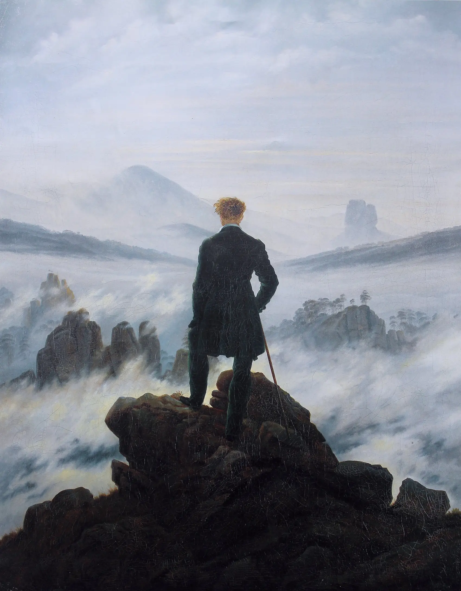
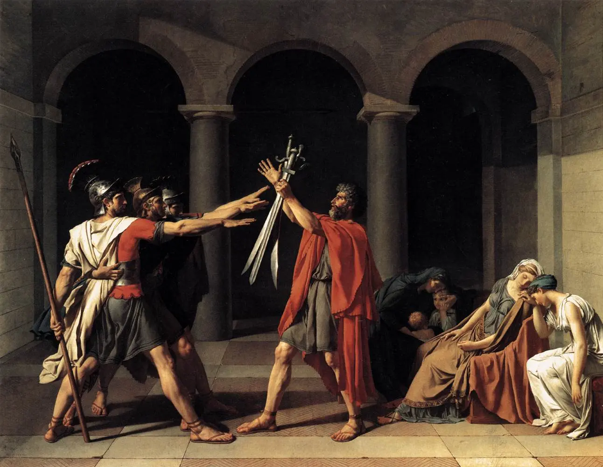
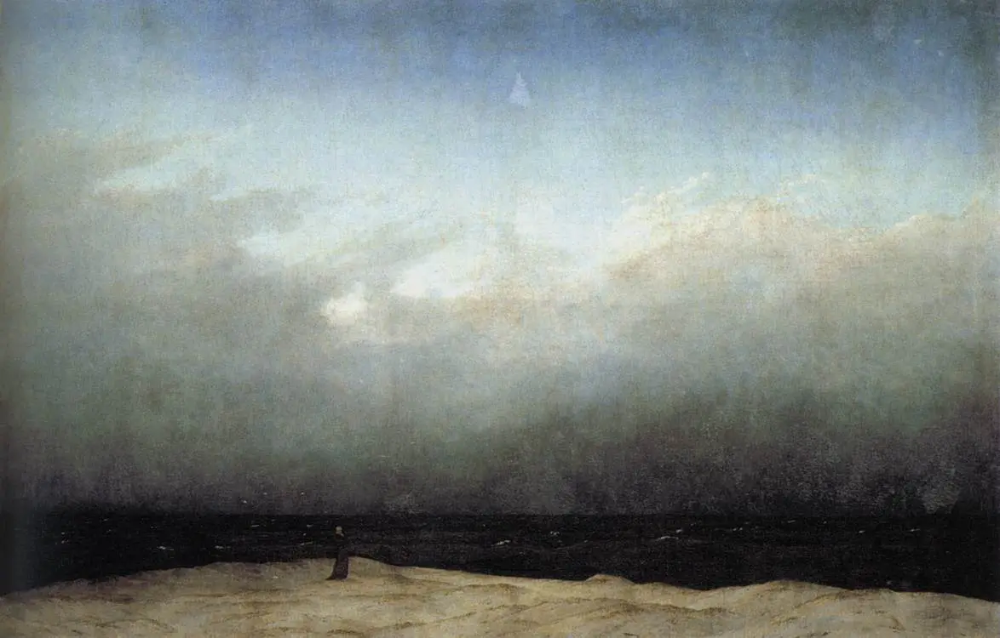
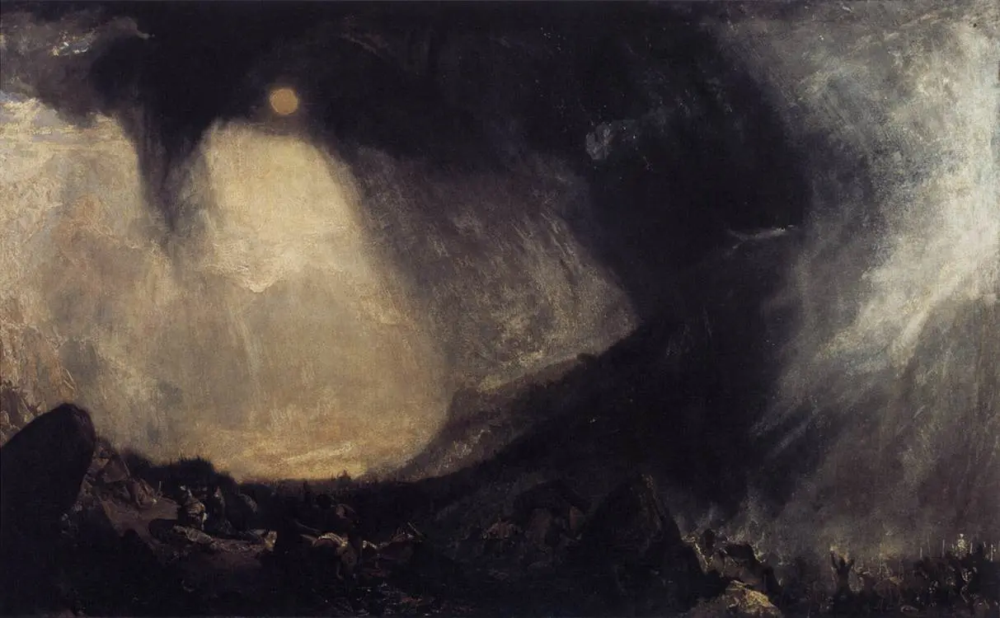
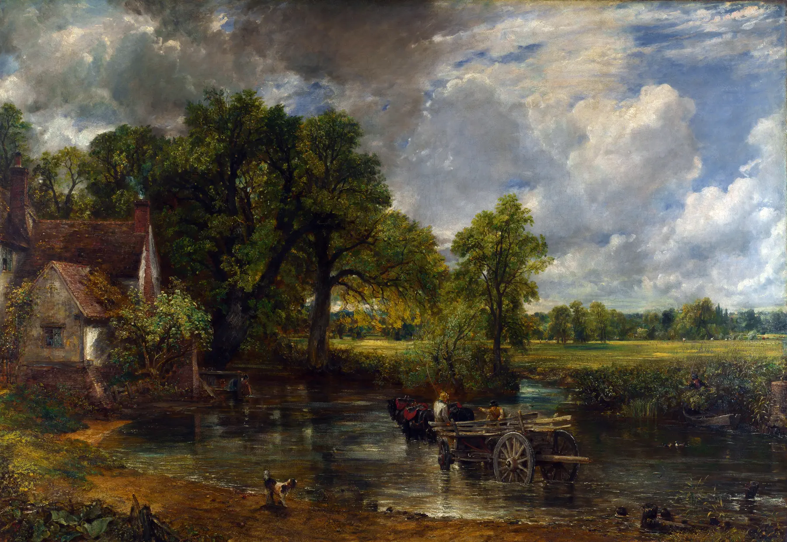
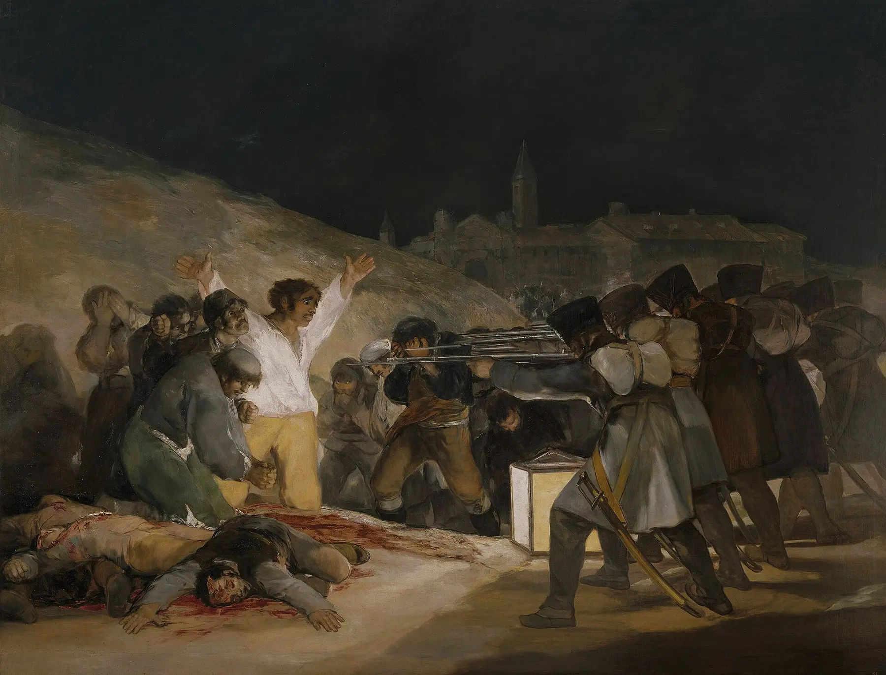
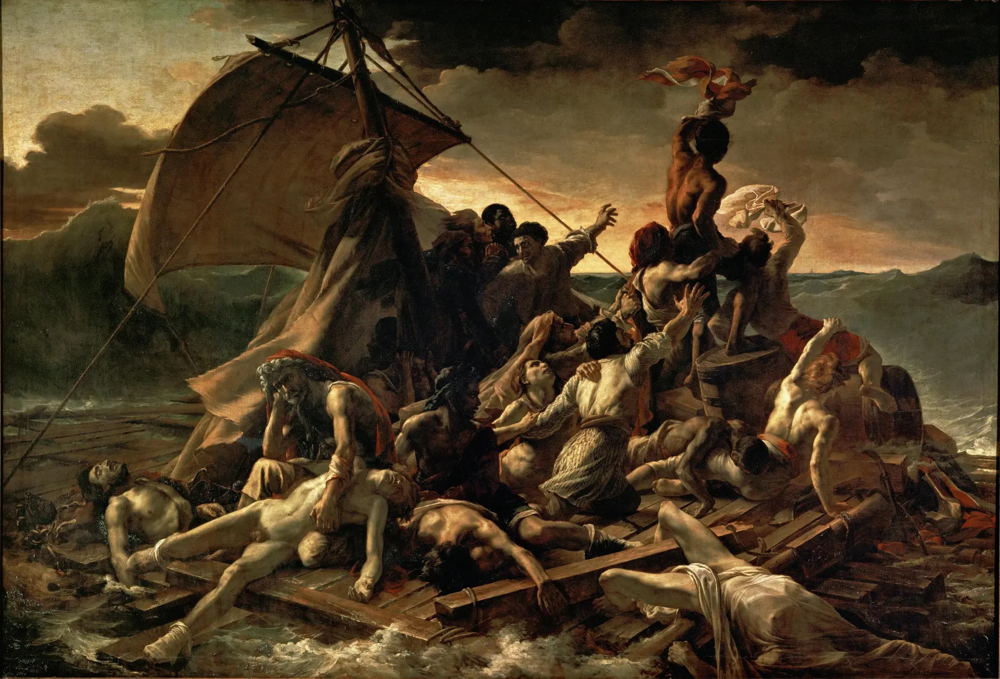
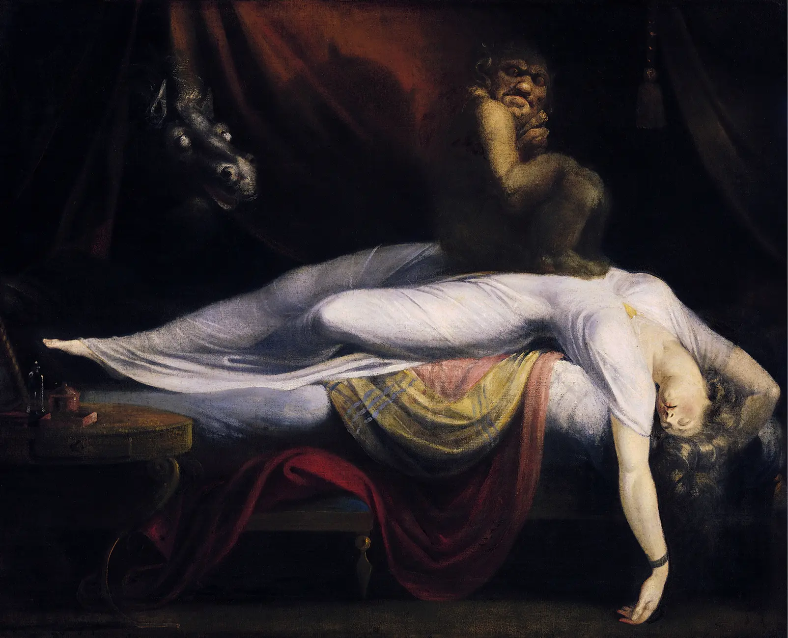
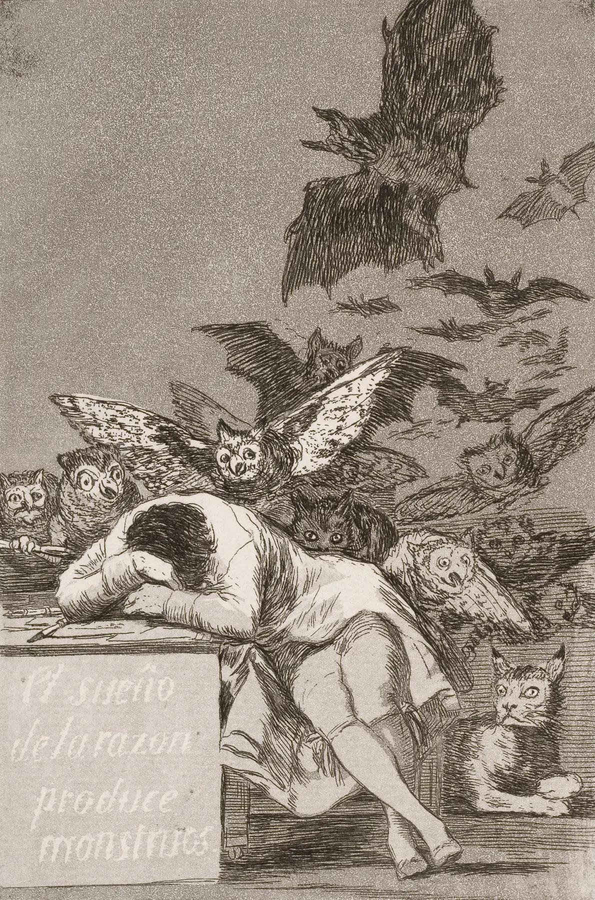

La tua sintesi
Completa almeno un laboratorio e il secondo taccuino per generare una sintesi personale.

12 · Romanticismo — prima di sapere
Non leggere ancora titolo e autore. Guarda la distanza. Qui l'immagine non offre una misura: apre una vertigine.
Il mondo precedente: la ragione prova a dare forma
Dal modulo 11
Bellezza regolata, virtù civica, forma chiara, ordine morale e fiducia nella ragione avevano trasformato l'arte in progetto educativo. Ma rivoluzione, guerra, natura, dolore, popolo, solitudine e infinito non restano obbedienti dentro una forma regolata.

| Categoria | Neoclassicismo | Romanticismo |
|---|---|---|
| Forma | Chiarezza, contorno, architettura morale. | Instabilità, atmosfera, profondità non completamente dominabile. |
| Individuo | Cittadino chiamato al dovere. | Soggetto fragile davanti a natura, storia e interiorità. |
| Storia | Esempio, virtù, memoria politica ordinata. | Ferita, trauma, rivoluzione, destino incerto. |
| Natura | Scenario regolato o modello ideale. | Forza autonoma: attrae, minaccia, assorbe. |
| Spettatore | Giudica un modello. | Entra in una soglia emotiva e percettiva. |
Dopo la misura: cronologia della frattura romantica
Cronologia e rete
La ragione illuministica resta presente, ma incontra ciò che non riesce più a contenere: rivoluzioni, Terrore, guerre napoleoniche, Restaurazione, nazioni, industria, nuove scienze, memoria medievale, rovine e pubblico borghese.
Seleziona un nodo. Il Romanticismo è una costellazione: filosofia, guerra, natura, nazione, mercato, letteratura e scienza agiscono insieme.
Che cosa significa "romantico"?
Una parola, tre prospettive
La parola raccoglie fenomeni diversi. In Germania la natura può diventare soglia spirituale; in Francia la storia contemporanea esplode nel quadro; in Inghilterra paesaggio, atmosfera e industria cambiano la visione; in Spagna Goya mostra la ragione ferita; in Italia il problema nazionale e storico assume forme specifiche.

Non è "sentimento contro ragione". Il Romanticismo mostra il punto in cui la ragione deve riconoscere il proprio limite davanti all'infinito, alla storia e all'interiorità.
Il sublime: bello, paura, infinito
Laboratorio
Burke insiste sulla forza dell'immenso, del terribile e dell'incontrollabile; Kant sposta l'accento sull'esperienza del soggetto che si scopre piccolo, ma capace di pensare ciò che lo supera. Qui lo traduciamo in strumenti di osservazione.
Equivalente testuale: il bello ordina la distanza; il sublime la rende insufficiente.
Simulazione didattica, non opera autentica.
Friedrich: l'uomo davanti all'infinito
Figura di spalle
La figura di spalle non chiude il significato: ci presta un posto. Lo spettatore guarda insieme al personaggio, ma non possiede ciò che vede. Nebbia, orizzonte e scala rendono la natura una soglia.
Equivalente testuale: nessuna sovrapposizione attiva.
La natura non è uno sfondo
Turner e Constable
Turner rende visibile energia, instabilità, luce e movimento; Constable studia nubi, umidità, lavoro rurale e memoria del luogo. La natura non è decorazione: è processo, atmosfera, tempo meteorologico.


Equivalente testuale: seleziona un fenomeno.
La storia diventa ferita
Goya · 3 maggio 1808
Rispetto a David, il corpo illuminato non offre un modello ordinato di virtù. È vittima, individuo, simbolo e accusa. I soldati diventano macchina anonima; la luce non salva, denuncia.

Equivalente testuale: nessuno strato attivo.
Il popolo entra nell'immagine
Delacroix · 1830
La Libertà è allegoria e donna concreta, idea politica e corpo. Le barricate raccolgono classi sociali diverse, cadaveri, fumo, mito nazionale, violenza e ambiguità. Non basta chiamarla icona patriottica.

Equivalente testuale: nessuno strato attivo.
Il naufragio della ragione
Géricault · La zattera della Medusa
Un fatto contemporaneo, uno scandalo politico, corpi veri e studiati, speranza e disperazione nella stessa diagonale. La pittura di storia non celebra un eroe antico: costringe il presente a guardare la propria responsabilità.

Equivalente testuale: nessuno strato attivo.
Visione, incubo, interiorità
Füssli, Blake, Goya
Sogno, incubo, immaginazione, paura e mostruoso mostrano un'altra crisi della ragione: non tutto ciò che ci abita è trasparente a noi stessi.


Laboratorio conclusivo: che cosa supera la ragione?
Quattro opere · una categoria per volta
Confronta una forma neoclassica, un paesaggio sublime, una storia romantica e un'opera che prepara il Realismo. La domanda è come cambiano pubblico, realtà e responsabilità dello sguardo.
Ritorno all'immagine
La stessa opera · un altro sguardo
Riguarda il Viandante senza sovrapposizioni. Che cosa riconosci ora che all'inizio restava soltanto intuizione?
Non hai ancora scritto un'annotazione.
Completa almeno un laboratorio e il secondo taccuino per generare una sintesi personale.
Verifica · 12 nuclei, 12 recuperi
Ogni errore apre una microlezione specifica e blocca il passaggio finché il recupero non viene superato. Lo stato resta salvato anche dopo la ricarica.
Domanda 1 di 12
Chiusura della galleria II
Con il Romanticismo si chiude la galleria Inventare l'uomo moderno. L'uomo è diventato centro, misura, cittadino, soggetto morale; ora si riconosce esposto a natura, storia, popolo, sogno, morte e infinito. Da qui il passo successivo non potrà più ignorare la realtà sociale: il modulo 13 aprirà il Realismo.
Modulo successivo predisposto13 — Chi merita di essere rappresentato?Realismo · Il lavoro entra nel quadroRicerca e trasparenza
Le interpretazioni sono costruite su musei, istituzioni culturali e risorse storico-artistiche attendibili. Wikimedia Commons è usata come deposito tecnico delle riproduzioni e delle licenze quando necessario.
Staatliche Museen zu Berlin · Friedrich, Monaco in riva al mare
Tate · Turner, Snow Storm: Hannibal
National Gallery · Constable, The Hay Wain
Museo del Prado · Goya, 3 maggio 1808
Musée du Louvre · Delacroix, La Libertà che guida il popolo
Musée du Louvre · Géricault, La zattera della Medusa
Detroit Institute of Arts · Füssli, The Nightmare
Museo del Prado · Goya, Il sonno della ragione
| File | Opera | Fonte e licenza |
|---|---|---|
| friedrich-viandante.webp | Caspar David Friedrich, Viandante sul mare di nebbia, 1818, Hamburger Kunsthalle | Commons, riproduzione di opera in pubblico dominio. |
| friedrich-monaco.webp | Caspar David Friedrich, Monaco in riva al mare, 1808-1810, Alte Nationalgalerie | Commons, pubblico dominio; fonte interpretativa SMB. |
| orazi.webp | Jacques-Louis David, Il giuramento degli Orazi, 1784, Louvre | Copia locale dal modulo 11; pubblico dominio. |
| turner-annibale.webp | J. M. W. Turner, Snow Storm: Hannibal..., 1812, Tate | Commons, pubblico dominio; fonte Tate. |
| constable-carro-fieno.webp | John Constable, The Hay Wain, 1821, National Gallery | Commons, pubblico dominio; fonte National Gallery. |
| goya-3-maggio.webp | Francisco Goya, Il 3 maggio 1808, 1814, Prado | Copia locale dal modulo 11; pubblico dominio; fonte Prado. |
| delacroix-liberta.webp | Eugène Delacroix, La Libertà che guida il popolo, 1830, Louvre | Commons, pubblico dominio; fonte Louvre. |
| gericault-medusa.webp | Théodore Géricault, La zattera della Medusa, 1818-1819, Louvre | Commons, pubblico dominio; fonte Louvre. |
| fuseli-incubo.webp | Henry Fuseli, The Nightmare, 1781, Detroit Institute of Arts | Commons, pubblico dominio; fonte DIA. |
| goya-sonno-ragione.webp | Francisco Goya, Il sonno della ragione genera mostri, 1797-1799 | Commons, pubblico dominio; fonte Prado. |